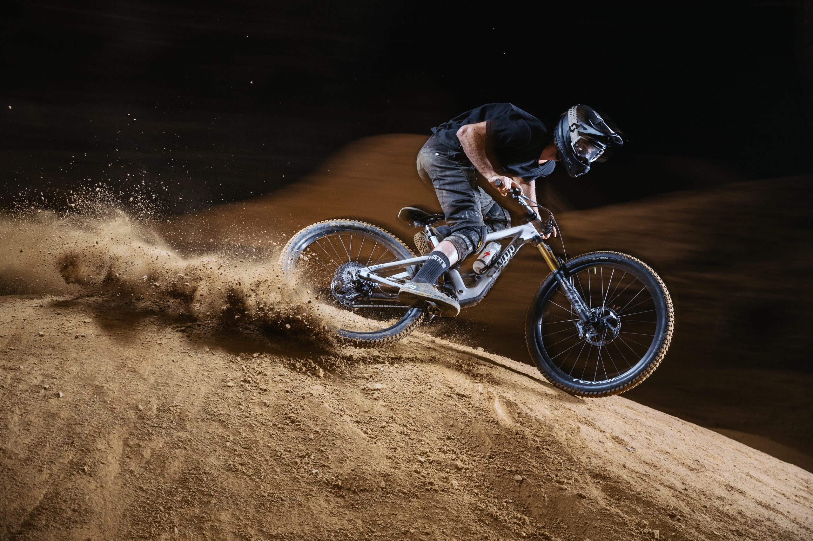

Rower Enduro – adrenalina i kontrola

Rower Enduro to idealny wybór dla miłośników agresywnej jazdy w trudnym terenie. Łączy cechy roweru zjazdowego i górskiego, co czyni go idealnym do zróżnicowanych warunków – podjazdy, zjazdy, skały, korzenie i skoki.
Cechy charakterystyczne roweru enduro:
- Długi skok zawieszenia (140–180 mm)
- Geometria przystosowana do zjazdów
- Wytrzymała rama i koła
- Hydrauliczne hamulce tarczowe
- Napęd 1x z szerokim zakresem przełożeń
Dlaczego warto wybrać enduro?
Jeśli lubisz wyzwania, prędkość i techniczne trasy, rower enduro pozwoli Ci pokonywać najbardziej wymagające szlaki z pełną kontrolą i frajdą. To wybór wielu zawodników i pasjonatów górskiej jazdy.
Gdzie jeździć?
- Bike parki z trasami enduro
- Górskie szlaki z elementami technicznymi
- Naturalne trasy z dużymi przewyższeniami
- Leśne ścieżki z korzeniami i kamieniami